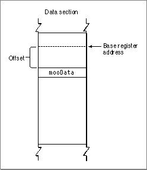
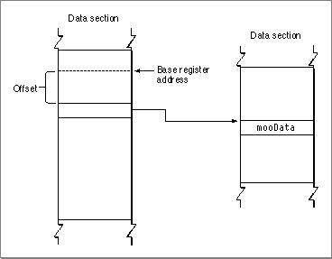
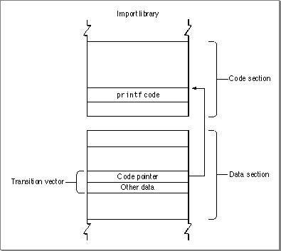

Overview
Two methods exist for addressing data: direct addressing and indirect addressing. The choice of addressing method for any particular data item is determined by the compiler. Direct addressing is accomplished by using a base register to access an area of memory called the direct data area. Direct data items can be referenced as an offset from the address stored in the base register. Figure 2-1 shows an example of direct addressing.Figure 2-1 Direct addressing of data
- Note
- The term direct addressing as used in this chapter actually assumes one level of indirection (using the base register) and is therefore not the same as absolute addressing in assembly-language terminology. Similarly, indirect addressing actually possesses two traditional levels of indirection.

Direct addressing is simple and efficient, but since the offset bits in a given instruction can address only a certain amount of memory (typically �32 KB), space limitations can occur if you have large data items or many data items.
If you are writing a compiler, you should store as many items as possible in the direct data area because this reduces access time. Small data items (that is, equal to or smaller than pointers) should always be placed in the direct data area.
The alternative is indirect addressing, where the item in the direct data area is not the data itself, but a pointer to that data. Since you are no longer restricted by addressing limitations, you can access large data structures. Figure 2-2 shows an example of indirect addressing.
Figure 2-2 Indirect addressing of data

The additional advantage of accessing symbols indirectly through pointers is that the symbols being referenced do not need to be present at build time. The components that make up a functional program can be stored separately if you can fix up the pointers to point to the correct symbols at runtime. In the CFM-based architecture, indirect addressing makes the use of imported and exported symbols possible.
Before preparation by the Code Fragment Manager, a fragment contains only a reference for each imported symbol. During the fragment preparation process, the Code Fragment Manager resolves all these references by searching for the code and data they refer to and replacing the references with relevant addresses.
Indirect addressing also provides the following benefits:
Indirect addressing of data items is simple. Knowing the address stored in the base register and the offset into the direct data area, you can access the pointer to the data and consequently the data itself. For example, to find the proper address of an imported data item, a fragment adds the offset of the pointer to the import within the direct data area (determined at compile time) to the value stored in the base register. The result is the address of a pointer to the data item.
- Symbols external to a fragment can be specified by name, not by address. This allows the symbols to be grouped into import libraries.
- Data can be specified by name, not by address.
- Callback routines can be specified by name, not by address.
- Using the base register allows multiple connections with independent data sections in the same address space. For example, in System 7, all applications share the same address space, so allowing a fragment to have multiple connections in that space makes it possible to have shared libraries.
- An import library can have multiple connections associated with it, each linked to a different application.
Indirect addressing of routines is a little more complicated, but it is essentially similar. Indirect calls to routines must pass through the routine's transition vector. A transition vector is a data structure in the called fragment's data section whose first element is the address of the routine to be called. Any pointer to a routine (such as those used by C++ virtual method calls) actually points to the routine's transition vector, whether or not the routine is in the same fragment.
- Note
- The same indirect method is used to access global variables; the pointer merely points to the current fragment rather than a different one.
Indirect calls branch to the routine address (the first element of the transition vector) and store the address of the transition vector in a specific register (the details vary depending on the platform). This allows the called routine to access other elements in the transition vector (if any). The generated code usually also varies slightly for named calls (such as calls to imported routines) versus pointer-based calls (C function pointers or C++ virtual functions, for example).
The basic structure of a transition vector is shown in Figure 2-3.
Figure 2-3 A transition vector

A routine's transition vector is accessed through the base register, just like any other piece of data. As with other data, it is generally more efficient to place the transition vector in the direct data area. Control can then pass from the transition vector to the called routine.
The transition vector can contain any number of elements in addition to the routine address. These other elements may be used by the called routine in any way useful. For example, the PowerPC and CFM-68K implementations typically store a pointer to the called fragment's direct data area in a routine's transition vector; this method of storing the pointer allows the called routine to access its own data.
© Apple Computer, Inc.
11 MARCH 1997